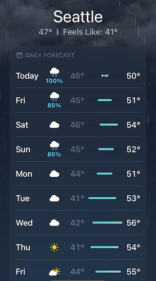
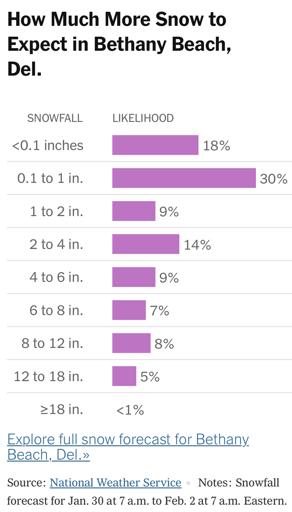

Quantitative Argumentation
Chapter 11 Drill Questions
No answers yet collected
NoteLikelihood
Exercise 1 These questions all relate to a setting where an event can have only two outcomes, outcome A and B.
Suppose the relative probabilities are 3 for A and 7 for B.
- What are the odds of A?
wsb-1-kes
- What are the odds of B?
wsb-2-k4w2
Exercise 2 These questions relate to an event with three possible outcomes, A, B, and C. The relative probabilities are 5, 2, and 7 respectively. (Note: We are using integers for simplicity. Relative probabilities can be any non-negative number, not just integers.)
- What is the odds of A?
ebs-1-e3se
- What is the odds of C?
ebs-2-e8ee
- What is the odds of the outcome being either B or C?
ebs-3-yeis
Explanation for correct answer: 1/odds(something) is p(not something)/p(something).
Explanation for choice “odds B + odds C”: Something similar would be true for probabilities: prob(B or C) = prob(B) + prob(C), but odds work differently.
Exercise 3 Suppose we have an event with possible outcomes A, B, C, D, E. We’ll call the relative probabilities of each of these outcomes rA, rB, rC, and so on. Remember, A, B, C, … are outcomes (e.g. snow, sun, cloudy, …) while rA, rB, rC, and so on are relative probabilities, that is, non-negative numbers. We’ll use pA, pB, pC, … to indicate absolute probabilities.
Assume that rA \(\neq\) pA, that is, that the relative probabilities are not absolute probabilities.
- What is the quantity rA/(rA + rB + rC + rD + rE)?
pmp-1-xgs
- What is the quantity rA/(rB + rC + rD + rE)?
pmp-2-3xgs
- What is the quantity pA/(rB + rC + rD + rE)?
pmp-3-r3gs
- What is the quantity pA/(pA + pB + pC + pD + pE)?
pmp-4-g312s
- What is the quantity rA/(1-rA)?
pmp-5-gjki8
Exercise 4 Here is the weather forecast for a winter week in Seattle, Washington. The blue numbers, as you may well know, are the probabilities of rain for that day.

- What are the odds of rain on Sunday?
nfd-1-ekxs
- What are the odds of rain on Monday?
nfd-2-uew
- What are the odds of rain for the first day of the forecast, labelled “Today.”
nfd-3-aur
Exercise 5 Here’s a weather forecast in the midst of a snowy period.

Due to round-off, the “likelihoods” do not add exactly to 1.00. But close enough, so let’s treat them as probabilities.
- What’s the probability of \(\leq 1\) in of snowfall?
crs-1-sno
- What’s the probability of \(1 \leq\ \text{snowfall} \ \leq 6\) in of snowfall?
crs-2-srto
- What’s the probability of \(1 \leq\ \text{snowfall} \ \leq 3\) in of snowfall?
crs-3-wql
Exercise 6 In 1990, Philipine President Corazon Aquino appointed retired Brig. Gen. Alfredo Lim to investigate claims that the government lottery was rigged. In September of that year, Gen. Lim won the lottery’s top prize of $200,000. Coincidence?
- What are appropriate competing hypotheses for evaluating the question of coincidence?
trl-1-3kc
- Suppose the lottery was indeed corrupt. Which of the following likelihoods would reflect skepticism that anyone in the lottery management would try to pay off the General?
trl-2-2kd
Tip
Assigning a low likelihood means that it would have been a surprise that the General won even if the lottery were corrupt.
- Suppose that the lottery was honest and that one-million people play it each week. What is the likelihood that the General would win the top prize?
trl-3-jfe
Tip
Some people might think that, because the General won, his probability of winning was 100%. But the likelihood of each possible outcome (e.g. win versus not win) has to be evaluated under the relevant hypothesis. Then, given the actual observed outcome, the likelihood assigned to that particular outcome is the one used.
- What is the likelihood ratio of the rigged versus honest hypotheses given the indicated answers to the above questions about likelihood?
trl-4-3ws
```
Tip
In constructing a likelihood ratio, you need to decide which hypothesis is in the numerator (top) of the ratio and which in the denominator (bottom). We didn’t use these words in the question prompt, but “H1 versus H2” is a standard way of saying that H1 is in the numerator. The calculated likelihood ratio will then measure the strength of evidence in favor of the hypothesis in the numerator.
- On the verbal scale for interpretting likelihood, what’s the best description for the indicated answer to (4)?
trl-5-wkc